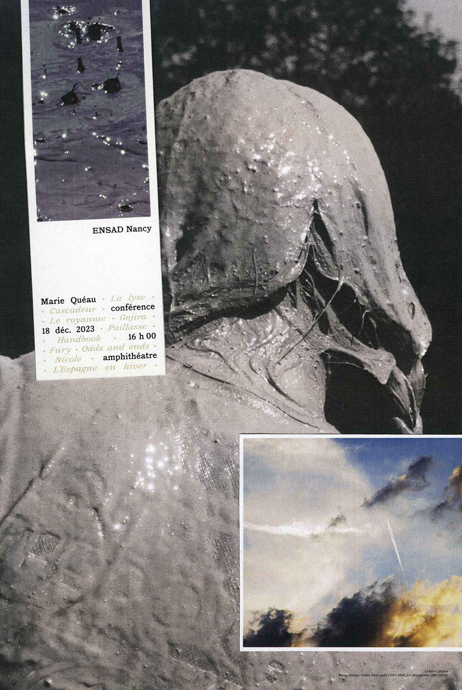
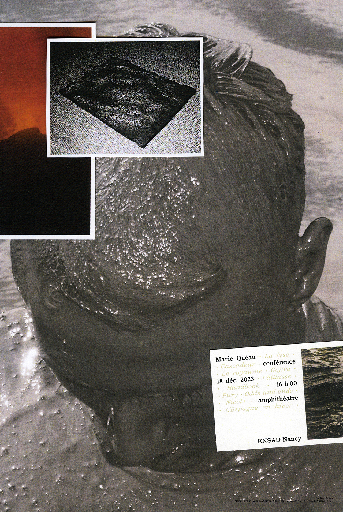
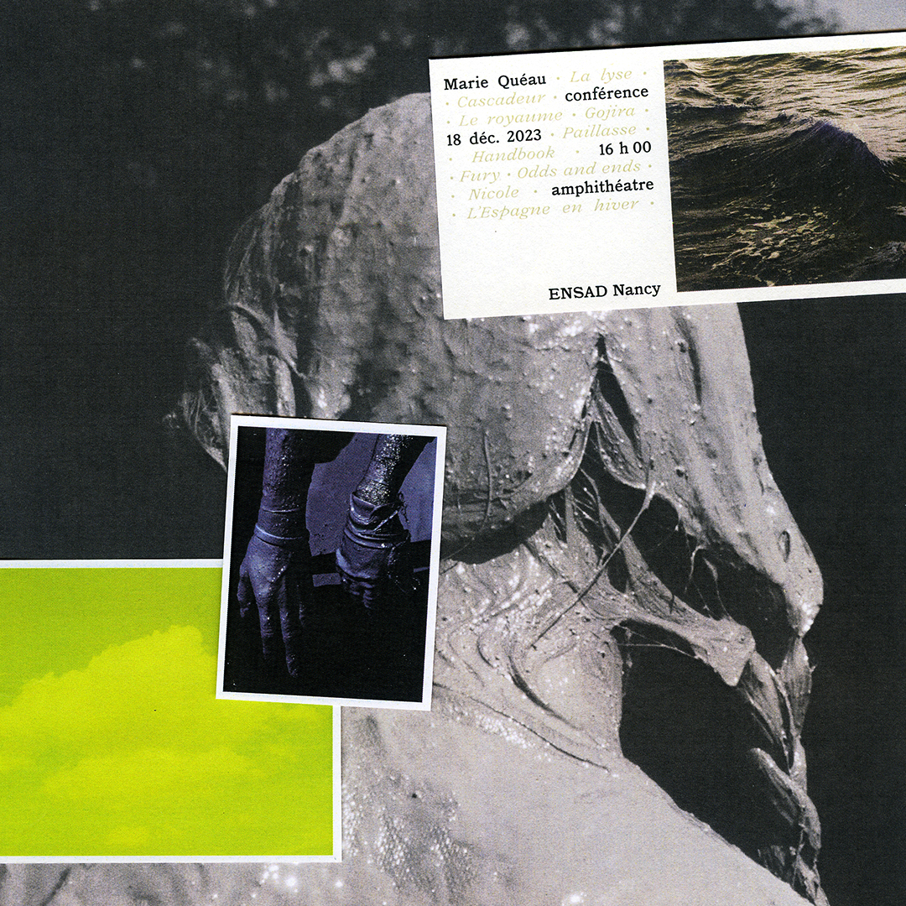
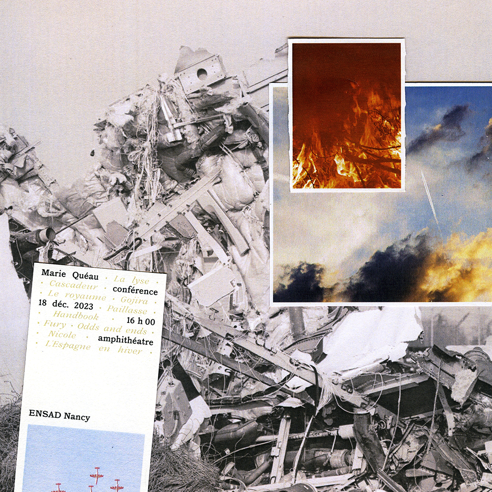
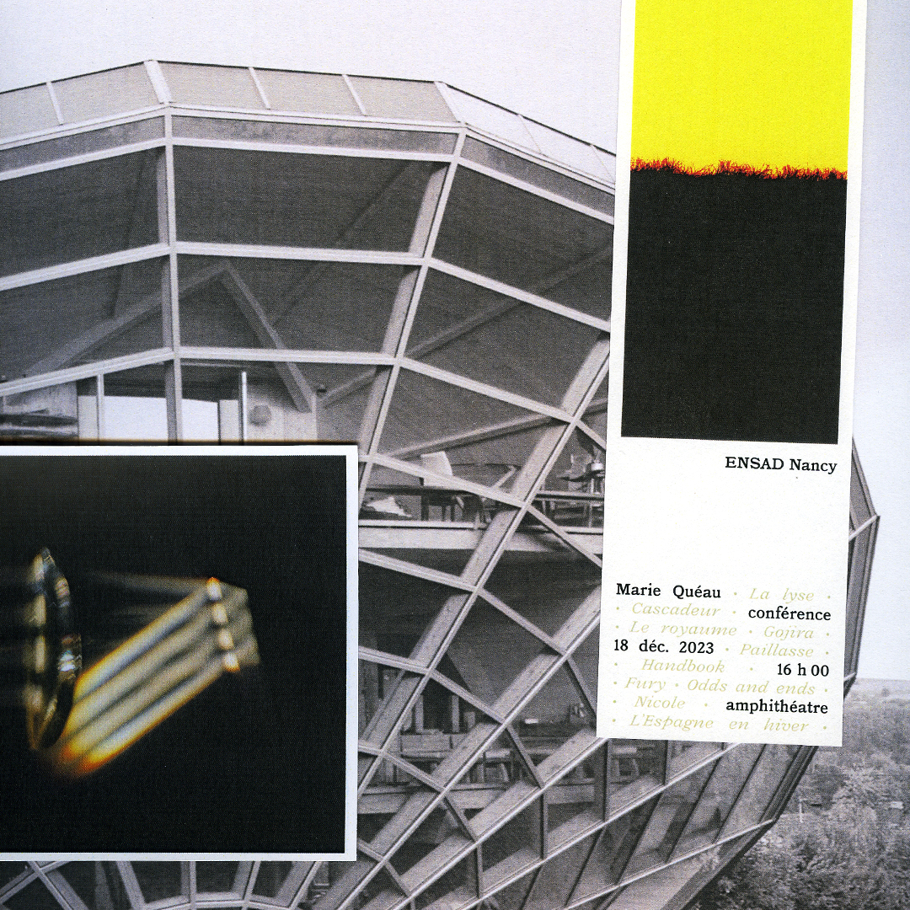
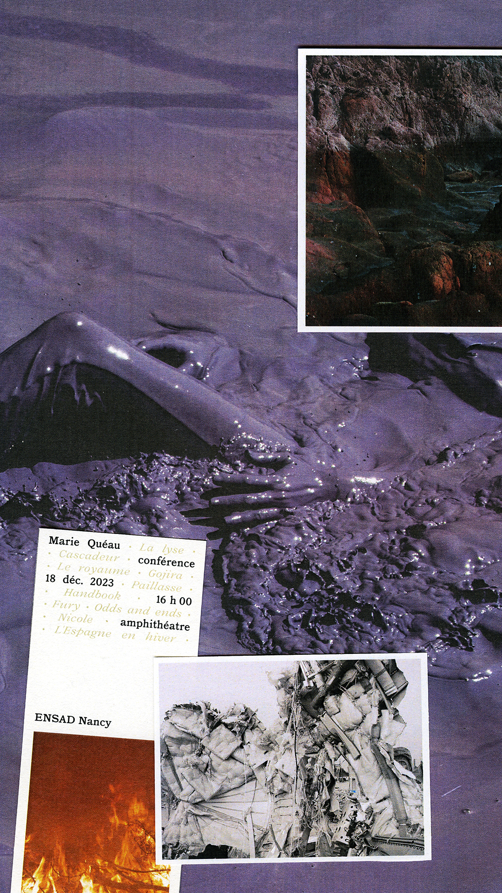

La venue de Marie Quéau
Réalisation d’une série d’affiches pour annoncer la conférence de Marie Quéau à l’ENSAD à Nancy. Creation of a series of posters for Marie Quéau's lecture at the ENSAD Nancy.
Nancy
2023
affiches posters 68 × 100 cm
visuels médias sociaux social media assets





